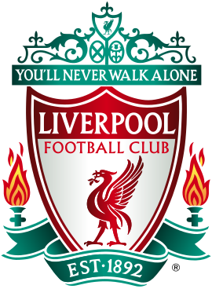

Manchester United
Manchester United Football Club , comúnmente conocido como Man United (a menudo estilizado como Man Utd ), o simplemente United , es un club de fútbol profesional con sede en Old Trafford , Greater Manchester , Inglaterra. El club compite en la Premier League , la máxima división del sistema de ligas de fútbol inglés . Apodados Red Devils, fueron fundados como Newton Heath LYR Football Club en 1878, pero cambiaron su nombre a Manchester United en 1902. Después de jugar en Clayton, Manchester , el club se mudó a su estadio actual, Old Trafford , en 1910.
Manchester City
El Manchester City Football Club es un club de fútbol profesional inglés con sede en Manchester que compite en la Premier League , la máxima categoría del fútbol inglés . Fundado en 1880 como St. Mark's (West Gorton) , se convirtió en Ardwick Association Football Club en 1887 y Manchester City en 1894. El estadio del club es el Etihad Stadium en el este de Manchester, al que se mudaron en 2003, habiendo jugado en Maine Road. desde 1923. El Manchester City adoptó su azul cielocamisetas de casa en 1894, en la primera temporada con el nombre actual.
